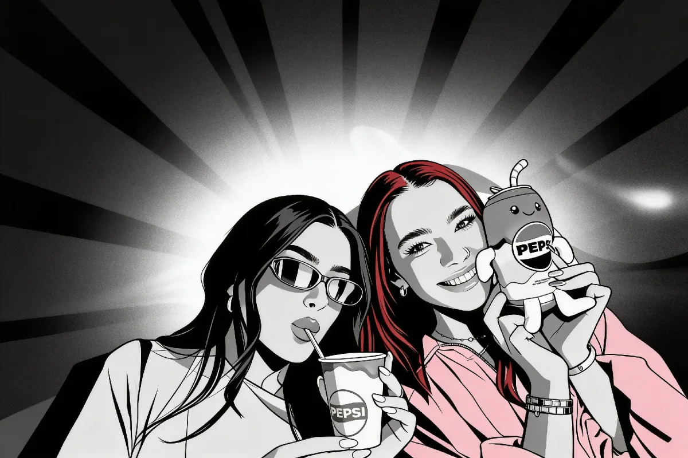

June 18, 2026
An AI photo booth is a photo booth that doesn’t just take your picture — it transforms it. The camera captures the shot, and within seconds artificial intelligence restyles it into pop art, a comic panel, a graffiti mural, an oil painting, or drops your guests into a scene that never existed. We hire AI photo booths nationwide across Ireland from €900 for a standard 3-hour package, fully inclusive.
It is, by a distance, the fastest-growing booth we run. Two years ago barely anyone asked for it; in 2026 it is the booth that corporate clients and brand teams request by name, and the one that gets the most disbelieving laughs on the night. This guide explains exactly what an AI photo booth does, how it works, what it costs, and when it is the right call — honestly, including when a simpler booth would serve you better.

A traditional booth takes a photo and prints it. An AI photo booth takes the photo and then runs it through a generative AI model that reimagines the image before it prints and shares. The guest is still recognisably themselves — same pose, same group, same grins — but rendered in a completely new style or world. The output still prints on the spot and still shares digitally, so you get the keepsake and the post.
The transformations fall into a few clear categories:
There is real engineering behind the magic, and it matters — a poorly built AI booth is slow, prints muddy results, and stalls a queue. Here is the sequence on the night.
Capture. The photo is taken on a proper Canon DSLR or mirrorless camera with studio lighting — not a tablet’s front camera. Clean, well-lit source images are the single biggest factor in how good the AI output looks, so we start with genuine camera quality.
Transformation. Our booths run on BoothLedger, the photo-booth software we build and maintain in-house. The moment the shutter fires, BoothLedger sends the image to the chosen AI effect and renders the new version in seconds. Because the same team writes the software and runs your event, it doesn’t fall over on the night — if a model is slow or a venue’s wifi is patchy, we have a plan for it rather than a frozen screen.
Print and share. The finished image prints on a dye-sublimation printer for that instant, smudge-proof keepsake, and lands on the guest’s phone within seconds by text, email or QR code. Prints are unlimited for the full hire. Every shot also flows into a live online gallery you keep afterwards.
The operator. A trained attendant runs the booth for the entire hire, helps guests pick an effect, manages the queue, and keeps the energy up. The technology is the draw; the person beside it is what keeps it flowing smoothly for three solid hours.
The best way to understand the difference is to see it. Here is the same group, captured normally, and then re-rendered by the booth.


That comic look is one preset. The same shot can be pushed into vivid pop art, a soft oil painting, anime line-work, or full street-art graffiti. We pick a small curated set of styles for each event rather than overwhelming guests with fifty options — three or four strong looks beats a confusing menu every time.

AI-generated scenes are where corporate and themed events come alive. Instead of restyling the guests, the booth rebuilds the world around them. For a product launch we can place every guest inside a branded environment; for a Halloween party, a haunted set; for a film-themed debs, the world of the movie. The face stays real, the surroundings are conjured to order.
For a deeper breakdown of how these effects map onto your hire and what each adds, our dedicated AI photo booth hire page walks through the full set with live examples.
Four things are driving the surge, and only one of them is novelty.
Shareability. A standard print strip gets pocketed. An AI-transformed image gets posted. We see AI booth outputs shared on Instagram and TikTok at a far higher rate than conventional prints — the image is unexpected enough that people genuinely want to show it off, which is exactly the behaviour brands are paying for.
The wow factor. Watching your own face turn into a comic-book hero in four seconds gets a reaction that a normal booth simply doesn’t. It pulls a queue, restarts conversations, and gives quieter guests an easy reason to take part.
Corporate and brand-activation demand. This is the engine. Marketing teams want an interactive moment that produces on-brand, social-ready content. An AI booth that generates branded scenes does exactly that — the activation and the content creation happen in the same five seconds. We cover this in depth in our guide to AI photo booths for corporate events.
Scarcity. Very few Irish suppliers run a properly engineered AI booth. Plenty bolt a cheap app onto a tablet; far fewer pair real camera capture with software they actually control. Because we build BoothLedger ourselves, our AI booth behaves like a finished product rather than a demo — and right now that puts you well ahead of the room.
More technology is not automatically the right answer. Here is the honest comparison.
Traditional / open-air booth. Still the workhorse, and still the best value at €680 to start. If your priority is a reliable, fun, print-in-hand keepsake that every age group instantly understands — a wedding with grandparents and toddlers, say — a classic booth is the safe, sensible pick. It will not turn anyone into a comic hero, and it does not need to.
360 booth. The 360 photo booth is about motion: a slow-motion video on a spinning platform, built for TikTok and Instagram Reels. It wins when you want dynamic, shareable video and have a younger, social-first crowd. It produces clips, not prints. If you want video energy, go 360; if you want transformed stills, go AI.
AI booth. The AI booth wins when you want a wow moment and shareable still images with a creative or branded twist — especially anything corporate, themed, or content-led. It is our priciest booth because the camera, software and processing behind it cost more per event. For a clear-eyed look at where the money goes, see our AI photo booth cost in Ireland guide, and for every booth type side by side, the full photo booth cost Ireland breakdown.
Corporate events and brand activations. This is the booth’s home turf. Branded AI scenes, logo overlays and on-message styles turn every guest into a content creator for your brand. Our corporate event photo booths guide goes into the engagement and lead-capture angle, and the corporate photo booth hire page covers packages and branding.
Weddings. Increasingly popular as a second booth or a late-night surprise — couples love an artistic portrait of their guests that looks nothing like a standard strip. We’d still pair it with, or follow, a more universal booth so every generation gets an easy option.
Milestone parties. 21sts, 30ths, 40ths and big anniversaries take to the AI booth brilliantly — the styles match the mood and the results dominate the group chat the next morning.
Debs and graduations. A film-themed or anime restyle is a natural fit for a younger crowd that lives on social, and the branded-scene option suits school or college themes neatly.
Festivals and public events. High footfall, high novelty, instant sharing — an AI booth pulls a crowd and produces a wall of distinctive, on-theme content fast.
AI photo booth hire in Ireland starts from €900 for a standard 3-hour package, and the price is fully inclusive. There are no surprise add-ons on the day. Every booking comes with:
The only variable is a small travel supplement for venues a long way from our Dublin (77 Camden Street Lower) and Athlone hubs, and it is always shown up front in your quote. Extra hours run roughly €100–€120 each, and booking more than six months ahead earns an early-booking discount of around 10–15%. Saturdays in June, July, August and December are peak; Fridays, Sundays and midweek dates have better availability and pricing. For the complete breakdown — what drives the price up or down and how to get the most from your budget — read our AI photo booth cost in Ireland guide.
Match the effects to the crowd. A corporate audience wants polished, on-brand styles; a 21st wants the loud, funny ones. Tell us the room and we’ll curate the preset list to fit rather than defaulting to everything.
Brief your guests — or let the operator do it. A ten-second explanation transforms participation. Our attendant primes the first few groups and the queue builds itself once people see the results.
Mind the lighting. AI output is only as good as the source photo. We bring our own studio lighting, but a position away from harsh direct sun or a pitch-black corner gives the cleanest, most flattering transformations.
Use the overlay and branding. Names, a hashtag, a logo, an event date — the custom template is included, so make it work for you. For brand activations, a branded AI scene plus a branded overlay turns every print into a piece of marketing. If you’re weighing the AI booth against a classic mirror finish, our selfie mirror hire page is a useful sense-check on the more traditional glam route.
An AI photo booth is a photo booth where, after the photo is taken on a professional camera, artificial intelligence transforms the image in seconds — restyling it as pop art, comic, graffiti, oil painting or anime, swapping faces into themed characters, or generating entirely new backgrounds and scenes. The result still prints on the spot and shares instantly to the guest’s phone.
AI photo booth hire in Ireland starts from €900 for a standard 3-hour package, fully inclusive of delivery, setup, a trained attendant, unlimited prints, digital sharing, an online gallery and a custom overlay. The only extra is a small travel supplement for venues far from our Dublin and Athlone hubs, always shown up front in your quote.
Yes. Every transformed image prints on a dye-sublimation printer for an instant, smudge-proof keepsake, and the same image is sent to the guest’s phone within seconds by text, email or QR code. Prints are unlimited for the full hire, and every shot is also saved to a live online gallery you keep afterwards.
It is the booth corporate clients request most. AI-generated branded scenes, logo overlays and on-message styles turn every guest into a content creator for your brand, producing social-ready, on-brand images in the same few seconds as the activation itself. It is a strong fit for product launches, conferences and brand activations.
A footprint of roughly 2.5m by 2.5m is comfortable, and the booth runs from a single standard domestic power socket within reach of the setup point. We confirm the exact requirements for your venue when you book, and our attendant handles all the setup and cabling on the day.
For peak dates — Saturdays in June, July, August and December — we recommend booking as early as you can, often six to twelve months out, as the AI booth sells out fastest. Booking more than six months ahead also earns an early-booking discount of around 10–15%. Fridays, Sundays and midweek dates have more availability and sharper pricing.
If you want the booth everyone is talking about — the one that turns your guests into pop-art heroes and your brand activation into a wall of shareable content — we’d love to help you plan it. Tell us your date, venue and the vibe you’re after, and we’ll put together a fully inclusive quote with a curated set of AI effects to match your crowd. Get in touch with our team and we’ll check availability for your date across Ireland.